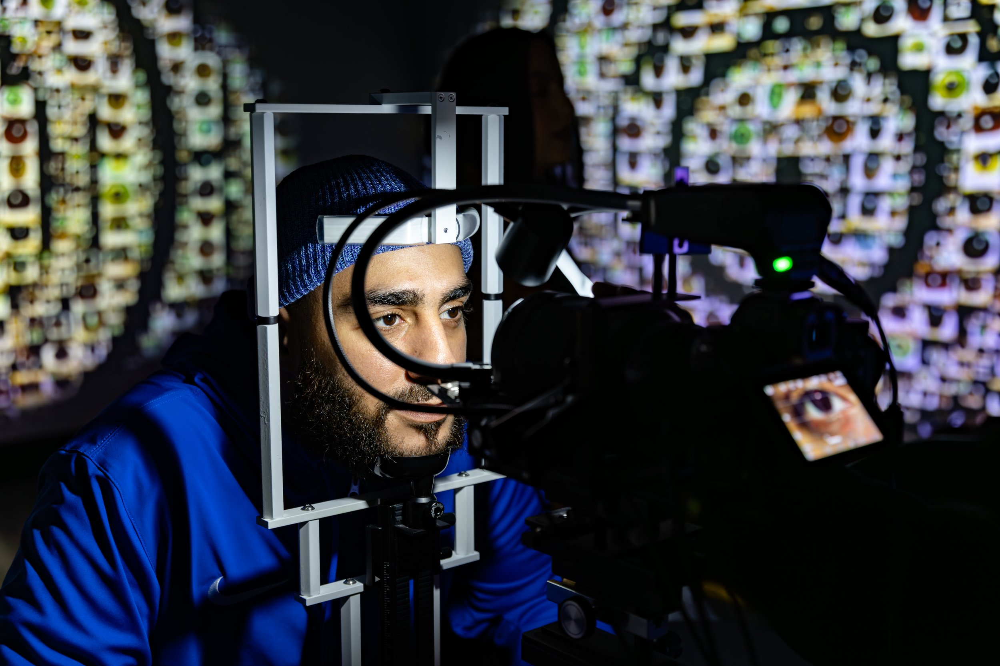
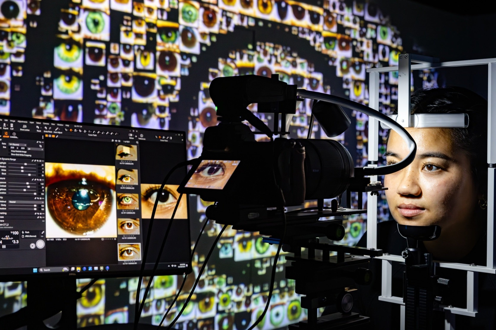
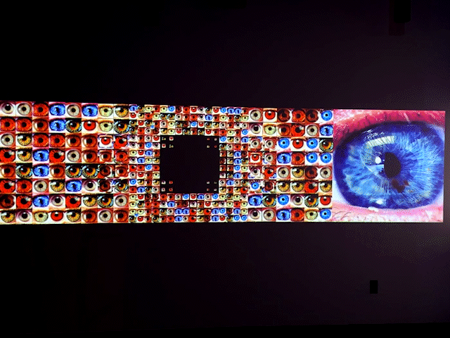
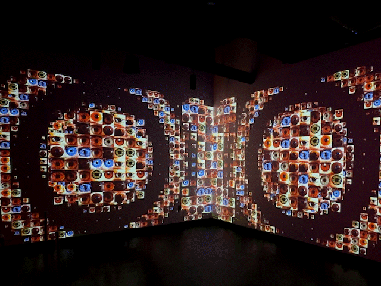
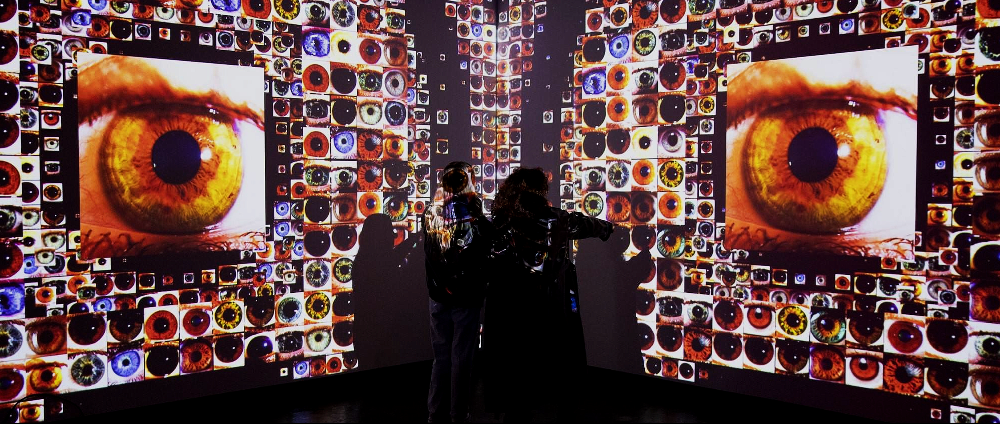

Selected Work
Iris is an immersive and participatory installation that captures the uniqueness of each museum visitor through their eyes. Using a DSLR camera setup, participants are invited to photograph their own iris. The captured image is processed and seamlessly integrated into a dynamic mosaic displayed on large projected walls.
At the center of the mosaic, each newly added iris becomes the focal point, surrounded by hundreds of others, forming a living archive of human diversity. The visuals respond in real time with undulating ripple effects emanating from the participant's iris, creating an impression of digital touch and life.
A custom application was developed in TouchDesigner to design mosaic patterns based on grayscale texture animations. The installation has been deployed across three projected walls at multiple WNDR locations.



Visual Development
Custom mosaic patterns were developed in TouchDesigner, using grayscale texture animations to drive the dynamic arrangement. Ripple effects were designed to emanate in real time from each new iris added to the archive.

Mosaic Engine
Multiple mosaic layouts and interaction styles were prototyped before arriving at the final system. The screen capture below shows the central display being actively manipulated during a live session at the WNDR Boston exhibition.
